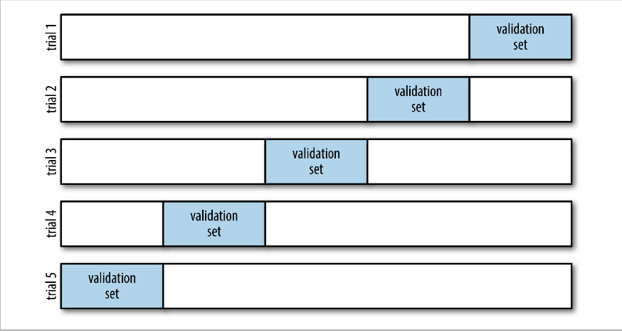
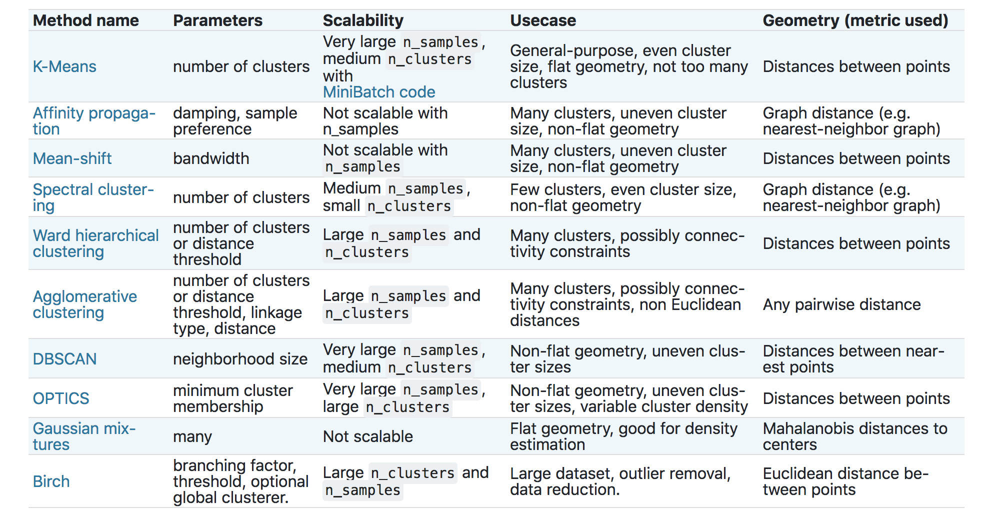

Table of Contents
Machine Learning using Python¶
Scikit-learn¶
Scikit-learn (sklearn) is the main Python package for machine learning. It is a widely-used and well-regarded package. However, there are a couple of challenges to using it given the usual pandas-based data munging pipeline.
sklearnrequires that all inputs be numeric, and in fact,numpyarrays.sklearnrequires that all categorical variables by replaced by 0/1 dummy variablessklearnrequires us to separate the predictors from the outcome. We need to have oneXmatrix for the predictors and oneyvector for the outcome.
The big issue, of course, is the first point. Given we used pandas precisely because we wanted to be able to keep heterogenous data. We have to be able to convert non-numeric data to numeric. pandas does help us out with this problem.
First of all, we know that all
pandasSeries and DataFrame objects can be converted tonumpyarrays using thevaluesorto_numpyfunctions.Second, we can easily extract a single variable from the data set using either the usual extracton methods or the
popfunction.Third,
pandasgives us a way to convert all categorical values to numeric dummy variables using theget_dummiesfunction. This is actually a more desirable solution than what you will see in cyberspace, which is to use theOneHotEncoderfunction fromsklearn.This is generally fine since many machine learning models look for interactions internally and don’t need them to be overtly specified. The main exceptions to this are linear and logistic regression. For those, we can use the formula methods described in the Statistical Modeling module to generate the appropriately transformed design matrix.
If the outcome variable is not numeric, we can
LabelEncoderfunction from thesklearn.preprocessingsubmodule to convert it.
I just threw a bunch of jargon at you. Let’s see what this means.
Transforming the outcome/target¶
import numpy as np
import pandas as pd
import sklearn
import statsmodels.api as sm
import matplotlib.pyplot as plt
import seaborn as sns
iris = sm.datasets.get_rdataset('iris').data
iris.head()
| Sepal.Length | Sepal.Width | Petal.Length | Petal.Width | Species | |
|---|---|---|---|---|---|
| 0 | 5.1 | 3.5 | 1.4 | 0.2 | setosa |
| 1 | 4.9 | 3.0 | 1.4 | 0.2 | setosa |
| 2 | 4.7 | 3.2 | 1.3 | 0.2 | setosa |
| 3 | 4.6 | 3.1 | 1.5 | 0.2 | setosa |
| 4 | 5.0 | 3.6 | 1.4 | 0.2 | setosa |
Let’s hit the first issue first. We need to separate out the outcome (the variable we want to predict) from the predictors (in this case the sepal and petal measurements).
y = iris['Species']
X = iris.drop('Species', axis = 1) # drops column, makes a copy
Another way to do this is
y = iris.pop('Species')
If you look at this, iris now only has 4 columns. So we could just use iris after the pop application, as the predictor set
We still have to update y to become numeric. This is where the sklearn functions start to be handy
from sklearn.preprocessing import LabelEncoder
le = LabelEncoder()
y = le.fit_transform(y)
y
array([0, 0, 0, 0, 0, 0, 0, 0, 0, 0, 0, 0, 0, 0, 0, 0, 0, 0, 0, 0, 0, 0,
0, 0, 0, 0, 0, 0, 0, 0, 0, 0, 0, 0, 0, 0, 0, 0, 0, 0, 0, 0, 0, 0,
0, 0, 0, 0, 0, 0, 1, 1, 1, 1, 1, 1, 1, 1, 1, 1, 1, 1, 1, 1, 1, 1,
1, 1, 1, 1, 1, 1, 1, 1, 1, 1, 1, 1, 1, 1, 1, 1, 1, 1, 1, 1, 1, 1,
1, 1, 1, 1, 1, 1, 1, 1, 1, 1, 1, 1, 2, 2, 2, 2, 2, 2, 2, 2, 2, 2,
2, 2, 2, 2, 2, 2, 2, 2, 2, 2, 2, 2, 2, 2, 2, 2, 2, 2, 2, 2, 2, 2,
2, 2, 2, 2, 2, 2, 2, 2, 2, 2, 2, 2, 2, 2, 2, 2, 2, 2])
Let’s talk about this code, since it’s very typical of the way the sklearn
code works. First, we import a method (LabelEncoder) from the appropriate
sklearn module. The second line, le = LabelEncoder() works to “turn on” the
method. This is like taking a power tool off the shelf and plugging it in to a
socket. It’s now ready to work. The third line does the actual work. The
fit_transform function transforms the data you input into it based on the
method it is then attached to.
Let’s make a quick analogy. You can plug in both a power washer and a jackhammer to get them ready to go. You can then apply each of them to your driveway. They “transform” the driveway in different ways depending on which tool is used. The washer would “transform” the driveway by cleaning it, while the jackhammer would transform the driveway by breaking it.
There’s an interesting invisible quirk to the code, though. The object le also got transformed during this
process. There were pieces added to it during the fit_transform process.
le = LabelEncoder()
d1 = dir(le)
y = le.fit_transform( pd.read_csv('data/iris.csv')['species'])
d2 = dir(le)
set(d2).difference(set(d1)) # set of things in d2 but not in d1
---------------------------------------------------------------------------
FileNotFoundError Traceback (most recent call last)
/var/folders/k4/xvcmx4yx76xdbl41zy3hq8rc0000gn/T/ipykernel_27060/2219942814.py in <module>
----> 1 y = le.fit_transform( pd.read_csv('data/iris.csv')['species'])
2 d2 = dir(le)
3 set(d2).difference(set(d1)) # set of things in d2 but not in d1
~/Python/venvs/biof440_env/lib/python3.7/site-packages/pandas/util/_decorators.py in wrapper(*args, **kwargs)
309 stacklevel=stacklevel,
310 )
--> 311 return func(*args, **kwargs)
312
313 return wrapper
~/Python/venvs/biof440_env/lib/python3.7/site-packages/pandas/io/parsers/readers.py in read_csv(filepath_or_buffer, sep, delimiter, header, names, index_col, usecols, squeeze, prefix, mangle_dupe_cols, dtype, engine, converters, true_values, false_values, skipinitialspace, skiprows, skipfooter, nrows, na_values, keep_default_na, na_filter, verbose, skip_blank_lines, parse_dates, infer_datetime_format, keep_date_col, date_parser, dayfirst, cache_dates, iterator, chunksize, compression, thousands, decimal, lineterminator, quotechar, quoting, doublequote, escapechar, comment, encoding, encoding_errors, dialect, error_bad_lines, warn_bad_lines, on_bad_lines, delim_whitespace, low_memory, memory_map, float_precision, storage_options)
584 kwds.update(kwds_defaults)
585
--> 586 return _read(filepath_or_buffer, kwds)
587
588
~/Python/venvs/biof440_env/lib/python3.7/site-packages/pandas/io/parsers/readers.py in _read(filepath_or_buffer, kwds)
480
481 # Create the parser.
--> 482 parser = TextFileReader(filepath_or_buffer, **kwds)
483
484 if chunksize or iterator:
~/Python/venvs/biof440_env/lib/python3.7/site-packages/pandas/io/parsers/readers.py in __init__(self, f, engine, **kwds)
809 self.options["has_index_names"] = kwds["has_index_names"]
810
--> 811 self._engine = self._make_engine(self.engine)
812
813 def close(self):
~/Python/venvs/biof440_env/lib/python3.7/site-packages/pandas/io/parsers/readers.py in _make_engine(self, engine)
1038 )
1039 # error: Too many arguments for "ParserBase"
-> 1040 return mapping[engine](self.f, **self.options) # type: ignore[call-arg]
1041
1042 def _failover_to_python(self):
~/Python/venvs/biof440_env/lib/python3.7/site-packages/pandas/io/parsers/c_parser_wrapper.py in __init__(self, src, **kwds)
49
50 # open handles
---> 51 self._open_handles(src, kwds)
52 assert self.handles is not None
53
~/Python/venvs/biof440_env/lib/python3.7/site-packages/pandas/io/parsers/base_parser.py in _open_handles(self, src, kwds)
227 memory_map=kwds.get("memory_map", False),
228 storage_options=kwds.get("storage_options", None),
--> 229 errors=kwds.get("encoding_errors", "strict"),
230 )
231
~/Python/venvs/biof440_env/lib/python3.7/site-packages/pandas/io/common.py in get_handle(path_or_buf, mode, encoding, compression, memory_map, is_text, errors, storage_options)
704 encoding=ioargs.encoding,
705 errors=errors,
--> 706 newline="",
707 )
708 else:
FileNotFoundError: [Errno 2] No such file or directory: 'data/iris.csv'
So we see that there is a new component added, called classes_.
le.classes_
---------------------------------------------------------------------------
AttributeError Traceback (most recent call last)
/var/folders/k4/xvcmx4yx76xdbl41zy3hq8rc0000gn/T/ipykernel_27060/159436719.py in <module>
----> 1 le.classes_
AttributeError: 'LabelEncoder' object has no attribute 'classes_'
So the original labels aren’t destroyed; they are being stored. This can be useful.
le.inverse_transform([0,1,1,2,0])
---------------------------------------------------------------------------
NotFittedError Traceback (most recent call last)
/var/folders/k4/xvcmx4yx76xdbl41zy3hq8rc0000gn/T/ipykernel_27060/1391667975.py in <module>
----> 1 le.inverse_transform([0,1,1,2,0])
~/Python/venvs/biof440_env/lib/python3.7/site-packages/sklearn/preprocessing/_label.py in inverse_transform(self, y)
150 y : ndarray of shape (n_samples,)
151 """
--> 152 check_is_fitted(self)
153 y = column_or_1d(y, warn=True)
154 # inverse transform of empty array is empty array
~/Python/venvs/biof440_env/lib/python3.7/site-packages/sklearn/utils/validation.py in inner_f(*args, **kwargs)
61 extra_args = len(args) - len(all_args)
62 if extra_args <= 0:
---> 63 return f(*args, **kwargs)
64
65 # extra_args > 0
~/Python/venvs/biof440_env/lib/python3.7/site-packages/sklearn/utils/validation.py in check_is_fitted(estimator, attributes, msg, all_or_any)
1096
1097 if not attrs:
-> 1098 raise NotFittedError(msg % {'name': type(estimator).__name__})
1099
1100
NotFittedError: This LabelEncoder instance is not fitted yet. Call 'fit' with appropriate arguments before using this estimator.
So we can transform back from the numeric to the labels. Keep this in hand, since it will prove useful after we have done some predictions using a ML model, which will give numeric predictions.
Transforming the predictors¶
Let’s look at a second example. The diamonds dataset has several categorical variables that would need to be transformed.
diamonds = pd.read_csv('data/diamonds.csv.gz')
y = diamonds.pop('price').values
X = pd.get_dummies(diamonds)
# Alternatively
# import patsy
# f = '~ np.log(carat) + + clarity + depth + cut * color'
# X = patsy.dmatrix(f, data=diamonds)
---------------------------------------------------------------------------
FileNotFoundError Traceback (most recent call last)
/var/folders/k4/xvcmx4yx76xdbl41zy3hq8rc0000gn/T/ipykernel_27060/355082837.py in <module>
----> 1 diamonds = pd.read_csv('data/diamonds.csv.gz')
2
3 y = diamonds.pop('price').values
4 X = pd.get_dummies(diamonds)
5
~/Python/venvs/biof440_env/lib/python3.7/site-packages/pandas/util/_decorators.py in wrapper(*args, **kwargs)
309 stacklevel=stacklevel,
310 )
--> 311 return func(*args, **kwargs)
312
313 return wrapper
~/Python/venvs/biof440_env/lib/python3.7/site-packages/pandas/io/parsers/readers.py in read_csv(filepath_or_buffer, sep, delimiter, header, names, index_col, usecols, squeeze, prefix, mangle_dupe_cols, dtype, engine, converters, true_values, false_values, skipinitialspace, skiprows, skipfooter, nrows, na_values, keep_default_na, na_filter, verbose, skip_blank_lines, parse_dates, infer_datetime_format, keep_date_col, date_parser, dayfirst, cache_dates, iterator, chunksize, compression, thousands, decimal, lineterminator, quotechar, quoting, doublequote, escapechar, comment, encoding, encoding_errors, dialect, error_bad_lines, warn_bad_lines, on_bad_lines, delim_whitespace, low_memory, memory_map, float_precision, storage_options)
584 kwds.update(kwds_defaults)
585
--> 586 return _read(filepath_or_buffer, kwds)
587
588
~/Python/venvs/biof440_env/lib/python3.7/site-packages/pandas/io/parsers/readers.py in _read(filepath_or_buffer, kwds)
480
481 # Create the parser.
--> 482 parser = TextFileReader(filepath_or_buffer, **kwds)
483
484 if chunksize or iterator:
~/Python/venvs/biof440_env/lib/python3.7/site-packages/pandas/io/parsers/readers.py in __init__(self, f, engine, **kwds)
809 self.options["has_index_names"] = kwds["has_index_names"]
810
--> 811 self._engine = self._make_engine(self.engine)
812
813 def close(self):
~/Python/venvs/biof440_env/lib/python3.7/site-packages/pandas/io/parsers/readers.py in _make_engine(self, engine)
1038 )
1039 # error: Too many arguments for "ParserBase"
-> 1040 return mapping[engine](self.f, **self.options) # type: ignore[call-arg]
1041
1042 def _failover_to_python(self):
~/Python/venvs/biof440_env/lib/python3.7/site-packages/pandas/io/parsers/c_parser_wrapper.py in __init__(self, src, **kwds)
49
50 # open handles
---> 51 self._open_handles(src, kwds)
52 assert self.handles is not None
53
~/Python/venvs/biof440_env/lib/python3.7/site-packages/pandas/io/parsers/base_parser.py in _open_handles(self, src, kwds)
227 memory_map=kwds.get("memory_map", False),
228 storage_options=kwds.get("storage_options", None),
--> 229 errors=kwds.get("encoding_errors", "strict"),
230 )
231
~/Python/venvs/biof440_env/lib/python3.7/site-packages/pandas/io/common.py in get_handle(path_or_buf, mode, encoding, compression, memory_map, is_text, errors, storage_options)
642 filename=handle,
643 mode=ioargs.mode,
--> 644 **compression_args,
645 )
646 else:
~/opt/anaconda3/envs/py3.7.2/lib/python3.7/gzip.py in __init__(self, filename, mode, compresslevel, fileobj, mtime)
161 mode += 'b'
162 if fileobj is None:
--> 163 fileobj = self.myfileobj = builtins.open(filename, mode or 'rb')
164 if filename is None:
165 filename = getattr(fileobj, 'name', '')
FileNotFoundError: [Errno 2] No such file or directory: 'data/diamonds.csv.gz'
type(X)
pandas.core.frame.DataFrame
X.info()
<class 'pandas.core.frame.DataFrame'>
RangeIndex: 150 entries, 0 to 149
Data columns (total 4 columns):
# Column Non-Null Count Dtype
--- ------ -------------- -----
0 Sepal.Length 150 non-null float64
1 Sepal.Width 150 non-null float64
2 Petal.Length 150 non-null float64
3 Petal.Width 150 non-null float64
dtypes: float64(4)
memory usage: 4.8 KB
So everything is now numeric!!. Let’s take a peek inside.
X.columns
Index(['Sepal.Length', 'Sepal.Width', 'Petal.Length', 'Petal.Width'], dtype='object')
So, it looks like the continuous variables remain intact, but the categorical variables got exploded out. Each
variable name has a level with it, which represents the particular level it is representing. Each of these
variables, called dummy variables, are numerical 0/1 variables. For example, color_F is 1 for those diamonds which have color F, and 0 otherwise.
pd.crosstab(X['color_F'], diamonds['color'])
---------------------------------------------------------------------------
KeyError Traceback (most recent call last)
~/Python/venvs/biof440_env/lib/python3.7/site-packages/pandas/core/indexes/base.py in get_loc(self, key, method, tolerance)
3360 try:
-> 3361 return self._engine.get_loc(casted_key)
3362 except KeyError as err:
~/Python/venvs/biof440_env/lib/python3.7/site-packages/pandas/_libs/index.pyx in pandas._libs.index.IndexEngine.get_loc()
~/Python/venvs/biof440_env/lib/python3.7/site-packages/pandas/_libs/index.pyx in pandas._libs.index.IndexEngine.get_loc()
pandas/_libs/hashtable_class_helper.pxi in pandas._libs.hashtable.PyObjectHashTable.get_item()
pandas/_libs/hashtable_class_helper.pxi in pandas._libs.hashtable.PyObjectHashTable.get_item()
KeyError: 'color_F'
The above exception was the direct cause of the following exception:
KeyError Traceback (most recent call last)
/var/folders/k4/xvcmx4yx76xdbl41zy3hq8rc0000gn/T/ipykernel_27060/204486084.py in <module>
----> 1 pd.crosstab(X['color_F'], diamonds['color'])
~/Python/venvs/biof440_env/lib/python3.7/site-packages/pandas/core/frame.py in __getitem__(self, key)
3453 if self.columns.nlevels > 1:
3454 return self._getitem_multilevel(key)
-> 3455 indexer = self.columns.get_loc(key)
3456 if is_integer(indexer):
3457 indexer = [indexer]
~/Python/venvs/biof440_env/lib/python3.7/site-packages/pandas/core/indexes/base.py in get_loc(self, key, method, tolerance)
3361 return self._engine.get_loc(casted_key)
3362 except KeyError as err:
-> 3363 raise KeyError(key) from err
3364
3365 if is_scalar(key) and isna(key) and not self.hasnans:
KeyError: 'color_F'
The methods¶
We will first look at supervised learning methods.
ML method |
Code to call it |
|---|---|
Decision Tree |
|
Random Forest |
|
Linear Regression |
|
Logistic Regression |
|
Support Vector Machines |
|
The general method that the code will follow is :
from sklearn.... import Machine
machine = Machine(*parameters*)
machine.fit(X, y)
A quick example¶
from sklearn.linear_model import LinearRegression
from sklearn.tree import DecisionTreeRegressor
lm = LinearRegression()
dt = DecisionTreeRegressor()
Lets manufacture some data
x = np.linspace(0, 10, 200)
y = 2 + 3*x - 5*(x**2)
d = pd.DataFrame({'x': x})
lm.fit(d,y)
dt.fit(d, y)
p1 = lm.predict(d)
p2 = dt.predict(d)
d['y'] = y
d['lm'] = p1
d['dt'] = p2
D = pd.melt(d, id_vars = 'x')
sns.relplot(data=D, x = 'x', y = 'value', hue = 'variable')
plt.show()
A data analytic example¶
diamonds = pd.read_csv('data/diamonds.csv.gz')
diamonds.info()
---------------------------------------------------------------------------
FileNotFoundError Traceback (most recent call last)
/var/folders/k4/xvcmx4yx76xdbl41zy3hq8rc0000gn/T/ipykernel_27060/2199611500.py in <module>
----> 1 diamonds = pd.read_csv('data/diamonds.csv.gz')
2 diamonds.info()
~/Python/venvs/biof440_env/lib/python3.7/site-packages/pandas/util/_decorators.py in wrapper(*args, **kwargs)
309 stacklevel=stacklevel,
310 )
--> 311 return func(*args, **kwargs)
312
313 return wrapper
~/Python/venvs/biof440_env/lib/python3.7/site-packages/pandas/io/parsers/readers.py in read_csv(filepath_or_buffer, sep, delimiter, header, names, index_col, usecols, squeeze, prefix, mangle_dupe_cols, dtype, engine, converters, true_values, false_values, skipinitialspace, skiprows, skipfooter, nrows, na_values, keep_default_na, na_filter, verbose, skip_blank_lines, parse_dates, infer_datetime_format, keep_date_col, date_parser, dayfirst, cache_dates, iterator, chunksize, compression, thousands, decimal, lineterminator, quotechar, quoting, doublequote, escapechar, comment, encoding, encoding_errors, dialect, error_bad_lines, warn_bad_lines, on_bad_lines, delim_whitespace, low_memory, memory_map, float_precision, storage_options)
584 kwds.update(kwds_defaults)
585
--> 586 return _read(filepath_or_buffer, kwds)
587
588
~/Python/venvs/biof440_env/lib/python3.7/site-packages/pandas/io/parsers/readers.py in _read(filepath_or_buffer, kwds)
480
481 # Create the parser.
--> 482 parser = TextFileReader(filepath_or_buffer, **kwds)
483
484 if chunksize or iterator:
~/Python/venvs/biof440_env/lib/python3.7/site-packages/pandas/io/parsers/readers.py in __init__(self, f, engine, **kwds)
809 self.options["has_index_names"] = kwds["has_index_names"]
810
--> 811 self._engine = self._make_engine(self.engine)
812
813 def close(self):
~/Python/venvs/biof440_env/lib/python3.7/site-packages/pandas/io/parsers/readers.py in _make_engine(self, engine)
1038 )
1039 # error: Too many arguments for "ParserBase"
-> 1040 return mapping[engine](self.f, **self.options) # type: ignore[call-arg]
1041
1042 def _failover_to_python(self):
~/Python/venvs/biof440_env/lib/python3.7/site-packages/pandas/io/parsers/c_parser_wrapper.py in __init__(self, src, **kwds)
49
50 # open handles
---> 51 self._open_handles(src, kwds)
52 assert self.handles is not None
53
~/Python/venvs/biof440_env/lib/python3.7/site-packages/pandas/io/parsers/base_parser.py in _open_handles(self, src, kwds)
227 memory_map=kwds.get("memory_map", False),
228 storage_options=kwds.get("storage_options", None),
--> 229 errors=kwds.get("encoding_errors", "strict"),
230 )
231
~/Python/venvs/biof440_env/lib/python3.7/site-packages/pandas/io/common.py in get_handle(path_or_buf, mode, encoding, compression, memory_map, is_text, errors, storage_options)
642 filename=handle,
643 mode=ioargs.mode,
--> 644 **compression_args,
645 )
646 else:
~/opt/anaconda3/envs/py3.7.2/lib/python3.7/gzip.py in __init__(self, filename, mode, compresslevel, fileobj, mtime)
161 mode += 'b'
162 if fileobj is None:
--> 163 fileobj = self.myfileobj = builtins.open(filename, mode or 'rb')
164 if filename is None:
165 filename = getattr(fileobj, 'name', '')
FileNotFoundError: [Errno 2] No such file or directory: 'data/diamonds.csv.gz'
First, lets separate out the outcome (price) and the predictors
y = diamonds.pop('price')
---------------------------------------------------------------------------
NameError Traceback (most recent call last)
/var/folders/k4/xvcmx4yx76xdbl41zy3hq8rc0000gn/T/ipykernel_27060/1782809031.py in <module>
----> 1 y = diamonds.pop('price')
NameError: name 'diamonds' is not defined
For many machine learning problems, it is useful to scale the numeric predictors so that they have mean 0 and variance 1. First we need to separate out the categorical and numeric variables
d1 = diamonds.select_dtypes(include = 'number')
d2 = diamonds.select_dtypes(exclude = 'number')
---------------------------------------------------------------------------
NameError Traceback (most recent call last)
/var/folders/k4/xvcmx4yx76xdbl41zy3hq8rc0000gn/T/ipykernel_27060/2902638172.py in <module>
----> 1 d1 = diamonds.select_dtypes(include = 'number')
2 d2 = diamonds.select_dtypes(exclude = 'number')
NameError: name 'diamonds' is not defined
Now let’s scale the columns of d1
from sklearn.preprocessing import scale
bl = scale(d1)
bl
---------------------------------------------------------------------------
ValueError Traceback (most recent call last)
/var/folders/k4/xvcmx4yx76xdbl41zy3hq8rc0000gn/T/ipykernel_27060/3939145991.py in <module>
1 from sklearn.preprocessing import scale
2
----> 3 bl = scale(d1)
4 bl
~/Python/venvs/biof440_env/lib/python3.7/site-packages/sklearn/utils/validation.py in inner_f(*args, **kwargs)
61 extra_args = len(args) - len(all_args)
62 if extra_args <= 0:
---> 63 return f(*args, **kwargs)
64
65 # extra_args > 0
~/Python/venvs/biof440_env/lib/python3.7/site-packages/sklearn/preprocessing/_data.py in scale(X, axis, with_mean, with_std, copy)
161 X = check_array(X, accept_sparse='csc', copy=copy, ensure_2d=False,
162 estimator='the scale function', dtype=FLOAT_DTYPES,
--> 163 force_all_finite='allow-nan')
164 if sparse.issparse(X):
165 if with_mean:
~/Python/venvs/biof440_env/lib/python3.7/site-packages/sklearn/utils/validation.py in inner_f(*args, **kwargs)
61 extra_args = len(args) - len(all_args)
62 if extra_args <= 0:
---> 63 return f(*args, **kwargs)
64
65 # extra_args > 0
~/Python/venvs/biof440_env/lib/python3.7/site-packages/sklearn/utils/validation.py in check_array(array, accept_sparse, accept_large_sparse, dtype, order, copy, force_all_finite, ensure_2d, allow_nd, ensure_min_samples, ensure_min_features, estimator)
671 array = array.astype(dtype, casting="unsafe", copy=False)
672 else:
--> 673 array = np.asarray(array, order=order, dtype=dtype)
674 except ComplexWarning as complex_warning:
675 raise ValueError("Complex data not supported\n"
ValueError: could not convert string to float: '__class__'
Woops!! We get a numpy array, not a DataFrame!!
bl = pd.DataFrame(scale(d1))
bl.columns = list(d1.columns)
d1 = bl
---------------------------------------------------------------------------
ValueError Traceback (most recent call last)
/var/folders/k4/xvcmx4yx76xdbl41zy3hq8rc0000gn/T/ipykernel_27060/3410083967.py in <module>
----> 1 bl = pd.DataFrame(scale(d1))
2 bl.columns = list(d1.columns)
3 d1 = bl
~/Python/venvs/biof440_env/lib/python3.7/site-packages/sklearn/utils/validation.py in inner_f(*args, **kwargs)
61 extra_args = len(args) - len(all_args)
62 if extra_args <= 0:
---> 63 return f(*args, **kwargs)
64
65 # extra_args > 0
~/Python/venvs/biof440_env/lib/python3.7/site-packages/sklearn/preprocessing/_data.py in scale(X, axis, with_mean, with_std, copy)
161 X = check_array(X, accept_sparse='csc', copy=copy, ensure_2d=False,
162 estimator='the scale function', dtype=FLOAT_DTYPES,
--> 163 force_all_finite='allow-nan')
164 if sparse.issparse(X):
165 if with_mean:
~/Python/venvs/biof440_env/lib/python3.7/site-packages/sklearn/utils/validation.py in inner_f(*args, **kwargs)
61 extra_args = len(args) - len(all_args)
62 if extra_args <= 0:
---> 63 return f(*args, **kwargs)
64
65 # extra_args > 0
~/Python/venvs/biof440_env/lib/python3.7/site-packages/sklearn/utils/validation.py in check_array(array, accept_sparse, accept_large_sparse, dtype, order, copy, force_all_finite, ensure_2d, allow_nd, ensure_min_samples, ensure_min_features, estimator)
671 array = array.astype(dtype, casting="unsafe", copy=False)
672 else:
--> 673 array = np.asarray(array, order=order, dtype=dtype)
674 except ComplexWarning as complex_warning:
675 raise ValueError("Complex data not supported\n"
ValueError: could not convert string to float: '__class__'
Now, let’s recode the categorical variables into dummy variables.
d2 = pd.get_dummies(d2)
---------------------------------------------------------------------------
NameError Traceback (most recent call last)
/var/folders/k4/xvcmx4yx76xdbl41zy3hq8rc0000gn/T/ipykernel_27060/2282591865.py in <module>
----> 1 d2 = pd.get_dummies(d2)
NameError: name 'd2' is not defined
and put them back together
X = pd.concat([d1,d2], axis = 1)
---------------------------------------------------------------------------
NameError Traceback (most recent call last)
/var/folders/k4/xvcmx4yx76xdbl41zy3hq8rc0000gn/T/ipykernel_27060/1291066080.py in <module>
----> 1 X = pd.concat([d1,d2], axis = 1)
NameError: name 'd2' is not defined
Next we need to split the data into a training set and a test set. Usually we do this as an 80/20 split. The purpose of the test set is to see how well the model works on an “external” data set. We don’t touch the test set until we’re done with all our model building in the training set. We usually do the split using random numbers. We’ll put 40,000 observations in the training set.
ind = list(X.index)
np.random.shuffle(ind)
X_train, y_train = X.loc[ind[:40000],:], y[ind[:40000]]
X_test, y_test = X.loc[ind[40000:],:], y[ind[40000:]]
There is another way to do this
from sklearn.model_selection import train_test_split
X_train, X_test, y_train, y_test = train_test_split(X, y , test_size = 0.2, random_state= 40)
---------------------------------------------------------------------------
ValueError Traceback (most recent call last)
/var/folders/k4/xvcmx4yx76xdbl41zy3hq8rc0000gn/T/ipykernel_27060/3915393023.py in <module>
1 from sklearn.model_selection import train_test_split
2
----> 3 X_train, X_test, y_train, y_test = train_test_split(X, y , test_size = 0.2, random_state= 40)
~/Python/venvs/biof440_env/lib/python3.7/site-packages/sklearn/model_selection/_split.py in train_test_split(test_size, train_size, random_state, shuffle, stratify, *arrays)
2170 raise ValueError("At least one array required as input")
2171
-> 2172 arrays = indexable(*arrays)
2173
2174 n_samples = _num_samples(arrays[0])
~/Python/venvs/biof440_env/lib/python3.7/site-packages/sklearn/utils/validation.py in indexable(*iterables)
354 """
355 result = [_make_indexable(X) for X in iterables]
--> 356 check_consistent_length(*result)
357 return result
358
~/Python/venvs/biof440_env/lib/python3.7/site-packages/sklearn/utils/validation.py in check_consistent_length(*arrays)
318 if len(uniques) > 1:
319 raise ValueError("Found input variables with inconsistent numbers of"
--> 320 " samples: %r" % [int(l) for l in lengths])
321
322
ValueError: Found input variables with inconsistent numbers of samples: [150, 200]
Now we will fit our models to the training data. Let’s use a decision tree model, a random forest model, and a linear regression.
from sklearn.linear_model import LinearRegression
from sklearn.tree import DecisionTreeRegressor
from sklearn.ensemble import RandomForestRegressor
lm = LinearRegression()
dt = DecisionTreeRegressor()
rf = RandomForestRegressor()
Now we will use our training data to fit the models
lm.fit(X_train, y_train)
dt.fit(X_train, y_train)
rf.fit(X_train, y_train)
RandomForestRegressor()
We now need to see how well the model fit the data. We’ll use the R2 statistic to be our metric of choice to evaluate the model fit.
from sklearn.metrics import r2_score
f"""
Linear regression: {r2_score(y_train, lm.predict(X_train))},
Decision tree: {r2_score(y_train, dt.predict(X_train))},
Random Forest: {r2_score(y_train, rf.predict(X_train))}
"""
'\nLinear regression: 0.7147558006729153, \nDecision tree: 0.9921343389631239,\nRandom Forest: 0.9532837468828566\n'
This is pretty amazing. However, we know that if we try and predict using the same data we used to train the model, we get better than expected results. One way to get a better idea about the true performance of the model when we will try it on external data is to do cross-validation.
Visualizing a decision tree¶
scikit-learn provides a decent way of visualizing a decision tree using a program called Graphviz, which is a dedicated graph and network visualization program.
import graphviz
from sklearn import tree
dt = DecisionTreeRegressor(max_depth=3)
dt.fit(X_train, y_train)
dot_data = tree.export_graphviz(dt, out_file=None,
feature_names = X_train.columns,
filled=True, rounded=True)
graph = graphviz.Source(dot_data);
graph
---------------------------------------------------------------------------
ModuleNotFoundError Traceback (most recent call last)
/var/folders/k4/xvcmx4yx76xdbl41zy3hq8rc0000gn/T/ipykernel_27060/3247724990.py in <module>
----> 1 import graphviz
2 from sklearn import tree
3
4 dt = DecisionTreeRegressor(max_depth=3)
5 dt.fit(X_train, y_train)
ModuleNotFoundError: No module named 'graphviz'
Alternatively,
tree.plot_tree(dt);
---------------------------------------------------------------------------
NameError Traceback (most recent call last)
/var/folders/k4/xvcmx4yx76xdbl41zy3hq8rc0000gn/T/ipykernel_27060/1528270934.py in <module>
----> 1 tree.plot_tree(dt);
NameError: name 'tree' is not defined
Cross-validation¶
In cross-validation, we split the dataset up into 5 equal parts randomly. We then train the model using 4 parts and predict the data on the 5th part. We do for all possible groups of 4 parts. We then consider the overall performance of prediction.

There is nothing special about the 5 splits. If you use 5 splits, it is called 5-fold cross-validation (CV), if you use 10 splits, it is 10-fold CV. If you use all but one subject as training data, and that one subject as test data, and cycle through all the subjects, that is called leave-one-out CV (LOOCV). All these methods are widely used, but 5- and 10-fold CV are often used as a balance between effectiveness and computational efficiency.
scikit-learn makes this pretty easy, using the cross_val_score function.
from sklearn.model_selection import cross_val_score
cv_score = cross_val_score(dt, X_train, y_train, cv=5, scoring='r2')
f"CV error = {np.round(np.mean(cv_score), 3)}"
'CV error = 0.484'
Improving models through cross-validation¶
The cross-validation error, as we’ve seen, gives us a better estimate of how well our model predicts on new data. We can use this to tune models by tweaking their parameters to get models that reasonably will perform better.
Each model that we fit has a set of parameters that govern how it proceeds
to fit the data. These can bee seen using the get_params function.
dt.get_params()
{'ccp_alpha': 0.0,
'criterion': 'mse',
'max_depth': None,
'max_features': None,
'max_leaf_nodes': None,
'min_impurity_decrease': 0.0,
'min_impurity_split': None,
'min_samples_leaf': 1,
'min_samples_split': 2,
'min_weight_fraction_leaf': 0.0,
'random_state': None,
'splitter': 'best'}
le.get_params()
{}
Linear regression is entirely determined by the functional form of the prediction equation,i.e., the “formula” we use. It doesn’t have any parameters to tune per se. Improving a linear regression involves playing with the different predictors and transforming them to improve the predictions. This involve subjects called regression diagnostics and feature engineering that we will leave to Google for now.
We can tune different parameters for the decision tree to try and see if some combination of parameters can improve predictions. One way to do this, since we’re using a computer, is a grid search. This means that we can set out sets of values of the parameters we want to tune, and the computer will go through every combination of those values to see how the model performs, and will provide the “best” model.
We would specify the values as a dictionary to the function GridSearchCV, which would optimize based on the cross-validation error.
from sklearn.model_selection import GridSearchCV
import numpy.random as rnd
rnd.RandomState(39358)
param_grid = {'max_depth': [1,3,5,7, 10], 'min_samples_leaf': [1,5,10,20],
'max_features' : ['auto','sqrt']}
clf = GridSearchCV(dt, param_grid, scoring = 'r2', cv = 5) # Tuning dt
clf.fit(X_train, y_train)
clf.best_estimator_
print(clf.best_score_)
0.7184901366983298
So how does this do on the test set?
p = clf.best_estimator_.predict(X_test)
r2_score(y_test, p)
---------------------------------------------------------------------------
ValueError Traceback (most recent call last)
/var/folders/k4/xvcmx4yx76xdbl41zy3hq8rc0000gn/T/ipykernel_27060/2994819971.py in <module>
----> 1 p = clf.best_estimator_.predict(X_test)
2 r2_score(y_test, p)
~/Python/venvs/biof440_env/lib/python3.7/site-packages/sklearn/tree/_classes.py in predict(self, X, check_input)
440 """
441 check_is_fitted(self)
--> 442 X = self._validate_X_predict(X, check_input)
443 proba = self.tree_.predict(X)
444 n_samples = X.shape[0]
~/Python/venvs/biof440_env/lib/python3.7/site-packages/sklearn/tree/_classes.py in _validate_X_predict(self, X, check_input)
406 if check_input:
407 X = self._validate_data(X, dtype=DTYPE, accept_sparse="csr",
--> 408 reset=False)
409 if issparse(X) and (X.indices.dtype != np.intc or
410 X.indptr.dtype != np.intc):
~/Python/venvs/biof440_env/lib/python3.7/site-packages/sklearn/base.py in _validate_data(self, X, y, reset, validate_separately, **check_params)
419 out = X
420 elif isinstance(y, str) and y == 'no_validation':
--> 421 X = check_array(X, **check_params)
422 out = X
423 else:
~/Python/venvs/biof440_env/lib/python3.7/site-packages/sklearn/utils/validation.py in inner_f(*args, **kwargs)
61 extra_args = len(args) - len(all_args)
62 if extra_args <= 0:
---> 63 return f(*args, **kwargs)
64
65 # extra_args > 0
~/Python/venvs/biof440_env/lib/python3.7/site-packages/sklearn/utils/validation.py in check_array(array, accept_sparse, accept_large_sparse, dtype, order, copy, force_all_finite, ensure_2d, allow_nd, ensure_min_samples, ensure_min_features, estimator)
727 " minimum of %d is required%s."
728 % (n_samples, array.shape, ensure_min_samples,
--> 729 context))
730
731 if ensure_min_features > 0 and array.ndim == 2:
ValueError: Found array with 0 sample(s) (shape=(0, 4)) while a minimum of 1 is required.
So this predictor is doing slightly better on the test set than the training set. This is often an indicator that the model is overfitting on the data. This is probable here, given the extremely high R2 values for this model.
Feature selection¶
We can also use cross-validation to do recursive feature selection (or backwards elimination), based on a predictive score. This is different from usual stepwise selection methods which are based on a succession of hypothesis tests.
from sklearn.feature_selection import RFECV
selector = RFECV(lm, cv = 5, scoring = 'r2')
selector = selector.fit(X_train, y_train)
selector.support_
array([False, False, False, True])
The support gives the set of predictors (True) that are finally selected.
X_train.columns[selector.support_]
Index(['Petal.Width'], dtype='object')
This is indicating that the best predictive model for the linear regression includes carat, cut, color and clarity, and width of the stone.
Logistic regression¶
We noted that logistic regression is available both through statsmodels and through scikit-learn. Let’s now try to fit a logistic regression model using scikit-learn. We will use the same Titanic dataset we used earlier.
import pandas as pd
import statsmodels.api as sm
import statsmodels.formula.api as smf
from sklearn.linear_model import LogisticRegression
titanic = sm.datasets.get_rdataset('Titanic','Stat2Data').data.dropna()
titanic.info()
<class 'pandas.core.frame.DataFrame'>
Int64Index: 756 entries, 0 to 1312
Data columns (total 6 columns):
# Column Non-Null Count Dtype
--- ------ -------------- -----
0 Name 756 non-null object
1 PClass 756 non-null object
2 Age 756 non-null float64
3 Sex 756 non-null object
4 Survived 756 non-null int64
5 SexCode 756 non-null int64
dtypes: float64(1), int64(2), object(3)
memory usage: 41.3+ KB
We will model Survived on the age, sex and passenger class of passengers.
from sklearn.model_selection import train_test_split
X = pd.get_dummies(titanic[['Age','Sex','PClass']], drop_first=True)
y = titanic.Survived
X_train, X_test, y_train, y_test = train_test_split(X, y , test_size = 0.2, random_state= 40) # 80/20 split
lrm = LogisticRegression()
lrm.fit(X_train, y_train)
LogisticRegression()
There are a few differences that are now evident between this model and the model we fit using statsmodels. As a reminder, we fit this model again below.
titanic1 = titanic.loc[X_train.index,:]
titanic2 = titanic.loc[X_test.index,:]
mod_logistic = smf.glm('Survived ~ Age + Sex + PClass', data=titanic1,
family = sm.families.Binomial()).fit()
mod_logistic.summary()
| Dep. Variable: | Survived | No. Observations: | 604 |
|---|---|---|---|
| Model: | GLM | Df Residuals: | 599 |
| Model Family: | Binomial | Df Model: | 4 |
| Link Function: | logit | Scale: | 1.0000 |
| Method: | IRLS | Log-Likelihood: | -282.34 |
| Date: | Wed, 15 Sep 2021 | Deviance: | 564.68 |
| Time: | 22:46:07 | Pearson chi2: | 666. |
| No. Iterations: | 5 | ||
| Covariance Type: | nonrobust |
| coef | std err | z | P>|z| | [0.025 | 0.975] | |
|---|---|---|---|---|---|---|
| Intercept | 3.6795 | 0.440 | 8.362 | 0.000 | 2.817 | 4.542 |
| Sex[T.male] | -2.5138 | 0.221 | -11.353 | 0.000 | -2.948 | -2.080 |
| PClass[T.2nd] | -1.2057 | 0.290 | -4.155 | 0.000 | -1.774 | -0.637 |
| PClass[T.3rd] | -2.5974 | 0.305 | -8.528 | 0.000 | -3.194 | -2.000 |
| Age | -0.0367 | 0.008 | -4.385 | 0.000 | -0.053 | -0.020 |
We can see the objects that are available to us from the two models using
dir(lrm) and dir(mod_logistic). We find that lrm does not give us
any parameter estimates, p-values or summary methods. It is much leaner, and, in line with other machine learning models, emphasizes predictions. So if you want to find associations between predictors and outcome, you will have to use the statsmodels version.
Let’s compare the predictions.
plt.clf()
p1 = lrm.predict_proba(X_test)[:,1]
p2 = mod_logistic.predict(titanic2)
plt.plot(p1, p2, '.');
plt.plot([0,1],[0,1], ':');
plt.xlabel('scikit-learn');
plt.ylabel('statsmodels');
plt.title('Predictions');
plt.show()
First note that the prediction functions work a bit differently. For lrm we have to explicitly ask for the probability predictions, whereas those are automatically provided for mod_logistic. We also find that the predictions aren’t exactly the same. This is because lrm, by default, runs a penalized regression using the lasso criteria (L2 norm), rather than the non-penalized version that mod_logistic runs. We can specify no penalty for lrm and can see much closer agreement between the two models.
lrm = LogisticRegression(penalty='none')
lrm.fit(X_train, y_train)
p1 = lrm.predict_proba(X_test)[:,1]
plt.clf()
plt.plot(p1, p2, '.');
plt.plot([0,1],[0,1], ':');
plt.xlabel('scikit-learn');
plt.ylabel('statsmodels');
plt.title('Predictions');
plt.show()
Unsupervised learning¶
Unsupervised learning is a class of machine learning methods where we are just trying to identify patterns in the data without any labels. This is in contrast to supervised learning, which are the modeling methods we have discussed above.
Most unsupervised learning methods fall broadly into a set of algorithms called cluster analysis. scikit-learn provides several clustering algorithms.

We will demonstrate the two more popular choices – K-Means and Agglomerative clustering (also known as hierarchical clustering). We will use the classic Fisher’s Iris data for this demonstration.
import statsmodels.api as sm
import pandas as pd
import matplotlib.pyplot as plt
import seaborn as sns
from sklearn.cluster import KMeans, AgglomerativeClustering
iris = sm.datasets.get_rdataset('iris').data
sns.relplot(data=iris, x = 'Sepal.Length',y = 'Sepal.Width', hue = 'Species');
The K-Means algorithm takes a pre-specified number of clusters as input, and then tries to find contiguous regions of the data to parse into clusters.
km = KMeans(n_clusters = 3)
km.fit(iris[['Sepal.Length','Sepal.Width']]);
km.labels_
array([1, 1, 1, 1, 1, 1, 1, 1, 1, 1, 1, 1, 1, 1, 1, 1, 1, 1, 1, 1, 1, 1,
1, 1, 1, 1, 1, 1, 1, 1, 1, 1, 1, 1, 1, 1, 1, 1, 1, 1, 1, 1, 1, 1,
1, 1, 1, 1, 1, 1, 0, 0, 0, 2, 0, 2, 0, 2, 0, 2, 2, 2, 2, 2, 2, 0,
2, 2, 2, 2, 2, 2, 2, 2, 0, 0, 0, 0, 2, 2, 2, 2, 2, 2, 2, 2, 0, 2,
2, 2, 2, 2, 2, 2, 2, 2, 2, 2, 2, 2, 0, 2, 0, 0, 0, 0, 2, 0, 0, 0,
0, 0, 0, 2, 2, 0, 0, 0, 0, 2, 0, 2, 0, 2, 0, 0, 2, 2, 0, 0, 0, 0,
0, 2, 2, 0, 0, 0, 2, 0, 0, 0, 2, 0, 0, 0, 2, 0, 0, 2], dtype=int32)
iris['km_labels'] = km.labels_
iris['km_labels'] = iris.km_labels.astype('category')
sns.relplot(data=iris, x = 'Sepal.Length', y = 'Sepal.Width',
hue = 'km_labels');
Agglomerative clustering takes a different approach. It starts by coalescing individual points successively, based on a distance metric and a principle for how to coalesce groups of points (called linkage). The number of clusters can then be determined either visually or via different cutoffs.
hc = AgglomerativeClustering(distance_threshold=0, n_clusters=None,
linkage='complete')
hc.fit(iris[['Sepal.Length','Sepal.Width']])
AgglomerativeClustering(distance_threshold=0, linkage='complete',
n_clusters=None)
hc.linkage
'complete'
from scipy.cluster.hierarchy import dendrogram
## The following is from https://scikit-learn.org/stable/auto_examples/cluster/plot_agglomerative_dendrogram.html
def plot_dendrogram(model, **kwargs):
# Create linkage matrix and then plot the dendrogram
# create the counts of samples under each node
counts = np.zeros(model.children_.shape[0])
n_samples = len(model.labels_)
for i, merge in enumerate(model.children_):
current_count = 0
for child_idx in merge:
if child_idx < n_samples:
current_count += 1 # leaf node
else:
current_count += counts[child_idx - n_samples]
counts[i] = current_count
linkage_matrix = np.column_stack([model.children_, model.distances_,
counts]).astype(float)
# Plot the corresponding dendrogram
dendrogram(linkage_matrix, **kwargs)
plot_dendrogram(hc, truncate_mode='level', p=3)
plt.xlabel("Number of points in node (or index of point if no parenthesis).")
plt.show()
hc = AgglomerativeClustering( n_clusters=3,
linkage='average')
hc.fit(iris[['Sepal.Length','Sepal.Width']]);
hc.labels_
array([0, 0, 0, 0, 0, 0, 0, 0, 0, 0, 0, 0, 0, 0, 0, 0, 0, 0, 0, 0, 0, 0,
0, 0, 0, 0, 0, 0, 0, 0, 0, 0, 0, 0, 0, 0, 0, 0, 0, 0, 0, 0, 0, 0,
0, 0, 0, 0, 0, 0, 2, 2, 2, 2, 2, 2, 2, 0, 2, 0, 0, 2, 2, 2, 2, 2,
2, 2, 2, 2, 2, 2, 2, 2, 2, 2, 2, 2, 2, 2, 2, 2, 2, 2, 2, 2, 2, 2,
2, 2, 2, 2, 2, 0, 2, 2, 2, 2, 0, 2, 2, 2, 1, 2, 2, 1, 0, 1, 2, 1,
2, 2, 2, 2, 2, 2, 2, 1, 1, 2, 2, 2, 1, 2, 2, 1, 2, 2, 2, 1, 1, 1,
2, 2, 2, 1, 2, 2, 2, 2, 2, 2, 2, 2, 2, 2, 2, 2, 2, 2])
iris['hc_labels'] = pd.Series(hc.labels_).astype('category')
sns.relplot(data=iris, x = 'Sepal.Length', y= 'Sepal.Width',
hue = 'hc_labels');
Play around with different linkage methods to see how these clusters change.